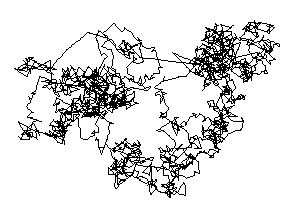

|  |
| Fractional Browniam motion, fBm, is a generalization of Brownian motion in which the increments no longer are independent. |
| First, we present the basic idea of fBm, and a visual comparison with Brownian motion. |
| Fractional Brownian motion occurs in many types, related to one another through an index H. |
| Here is a method for simulating fBm. |
| The index H can be interpreted as a measure of the roughness. |
| Here are some examples of fBm in the plane. |
| Fractional Brownian motion includes correlations between events, but retains the short tails of the normal distribution. |
Return to Random Fractals.